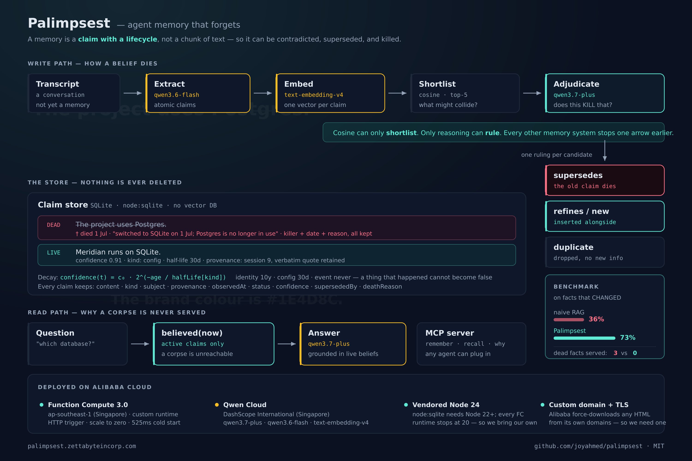
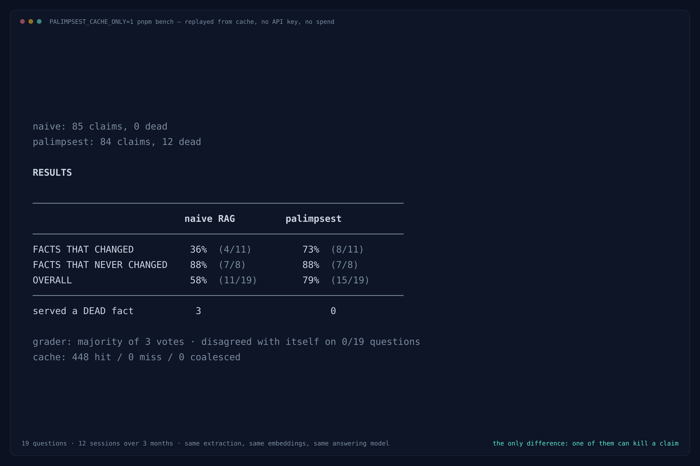
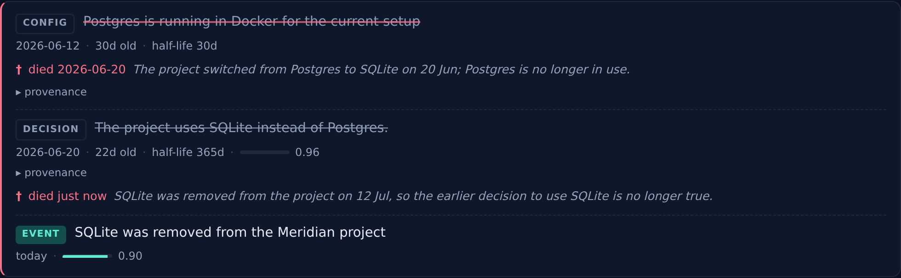
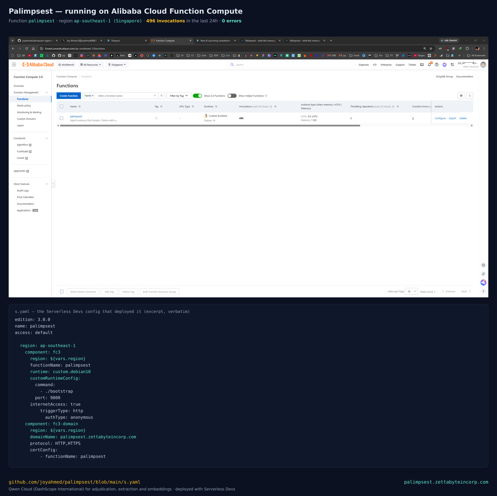

I built an agent memory that forgets - and my first benchmark said it was worthless
Every AI memory shipping today is append-only, and append-only memory rots. Here's what it took to build one that can kill a belief - including the part where my own numbers proved me wrong, twice.
Ask any AI agent with memory what port your dev server runs on. It answers instantly, confidently - and if the port ever changed, wrong.
Not because retrieval failed. Because retrieval worked exactly as designed.
The bug is in the geometry
Every memory system shipping today stores text, embeds it, and retrieves whatever is most similar to your question. Watch what that does to two claims that flatly contradict each other:
"We decided to use Postgres." vs "We decided NOT to use Postgres." 0.93
"The API listens on port 3000." vs "Port 3000 is where the API listens." 0.91The contradiction scores higher than the paraphrase. To a vector store, "we decided to use Postgres" and "we decided not to use Postgres" are more alike than two ways of saying the same true thing - because embeddings capture topic, not truth. The single word that reverses the entire meaning barely moves the number.
You cannot fix this with a threshold. Any cutoff that keeps the paraphrase keeps the contradiction. The signal is not in the number.
So the retriever hands the model the live fact and the dead one, ranked side by side, with no way to tell them apart. The model serves whichever won the cosine coin-flip. That is why your agent lies to you fluently.
Why nobody fixes it
Memory systems store chunks. A chunk is not a unit of truth - one paragraph holds five facts, three still true and two dead. You cannot delete half a chunk. You cannot edit it, because you don't know which sentence went bad.
So the only move left is to append a new chunk and leave the old one there.
That is why every memory system is append-only. Not for lack of imagination - they have no unit small enough to kill.
Claims, not chunks
A memory in Palimpsest is not a chunk. It is a claim: one atomic assertion, independently true or false - which means it can have a status, which means it can die.
Each claim carries:
- Provenance - where it came from, and when it became true in the world.
- Kind - because facts don't rot at one universal rate.
identityhas a ten-year half-life;confighas thirty days; aneventnever decays at all, because a thing that happened cannot become false. - Confidence - decaying exponentially from birth at the rate its kind implies.
- History - when a claim dies, we keep the body, the killer, the date, and the reason.
When a new claim arrives it doesn't just get appended. Cosine finds what it might
collide with, and then qwen3.7-plus rules: update, contradiction,
refinement, or genuinely new?
Cosine can only shortlist. Only reasoning can rule. Every other memory system stops one arrow earlier.

Then I measured it, and it said I'd wasted my time
A thesis without a number is a vibe. So I built a benchmark: twelve sessions of a real-shaped project across three months, where facts change - the database is swapped, the launch slips, the brand colour moves, the PM is replaced. Then ask what is true now.
The baseline is naive RAG - chunk, embed, top-k retrieve - given the same extraction, the same embeddings and the same answering model. The only difference between the two systems is that one of them can kill a claim.
The first run:
naive RAG Palimpsest
FACTS THAT CHANGED 80% 80%
NEVER CHANGED 100% 100%
OVERALL 88% 88%
SERVED A DEAD FACT 0 0Identical. Adjudication worked mechanically - four claims correctly superseded - it just didn't matter. My clever idea bought precisely nothing.
That result is still in the repo. Two flaws, both mine.
1. My fixture leaked the answer
Every change in my test data announced its own death:
"It's on port 4000 now, 3000 was colliding with the other project."
Real speech doesn't work like that. You say "we're on 4000 now." You do not file a death certificate for 3000. The naive memory was retrieving the obituary alongside the corpse - and any competent model can infer which one is dead from that.
2. Fifteen claims with top-5 retrieval isn't RAG
It hands the model a third of the entire store. The failure mode I'm targeting cannot occur when the disambiguating context lands in the context window by accident.
Before re-running, I wrote down the condition in advance:
Pre-registered: if the corrected benchmark still shows no meaningful gap, the thesis is wrong and I change the design, not the chart.
The gap appeared
Facts no longer announce their own death - the new value is simply stated, months later, with no reference to what it replaced. And ~100 claims instead of 15, so top-k retrieval is genuinely selective.
| naive RAG | Palimpsest | |
|---|---|---|
| Facts that changed | 36% (4/11) | 73% (8/11) |
| Facts that never changed | 88% (7/8) | 88% (7/8) |
| Overall | 58% (11/19) | 79% (15/19) |
| Served a dead fact | 3 | 0 |
Twice as accurate on facts that moved. But the row I'd check, if I were you, is the second one.
A memory so eager to forget that it destroys facts which are still true is worse than append-only, not better. That column could have killed the project. It didn't - but I'd have published it if it had.
Naive RAG served three dead facts - "Postgres", "September 1st", "#1E4D8C" - with total confidence, weeks after each one died. Palimpsest served none.

pnpm bench, replayed from the committed cache.Then the measuring instrument betrayed me
The grader marked two systems that had returned the identical answer -
"Session cookies" - one correct and the other wrong.
Same input. Different verdict. An instrument that disagrees with itself cannot certify anything, and my headline number was resting on it.
Fixing it - majority of three independent votes, with the disagreement rate printed next to every number it produces - exposed something worse underneath.
Claim IDs are random UUIDs, minted fresh on every run. And they were being interpolated straight into the adjudication prompt. So two runs over byte-identical inputs built different prompts, missed the cache, and re-sampled the model every single time.
My benchmark had been quietly re-rolling its own dice.
And it meant one of my published numbers was wrong: naive RAG serves 3 dead facts, not the 4 I had reported. One of those corpses was an artefact of my own non-determinism.
The corrected number is less flattering to me. It's the one in the table above.
The model now sees candidates by ordinal (1, 2, 3) instead of by UUID, so the prompt is a pure function of its inputs. Which means the whole thing finally replays:
PALIMPSEST_CACHE_ONLY=1 pnpm bench
→ 448 cache hits, 0 misses
Clone the repo, replay the benchmark, get bit-identical numbers - no API key, no
spend. CACHE_ONLY makes a cache miss throw rather than quietly hit
the API, so a replay cannot silently drift from what's published. I'd rather you checked than
trusted me.
Watch a belief die

That screenshot isn't staged. A script opened the deployed site, typed "We ripped SQLite out
this morning. Meridian runs on DuckDB now" into the box, and waited for the memory to
actually kill something. The reason text - "SQLite was removed from the project on 12 Jul, so
the earlier decision to use SQLite is no longer true" - was written by
qwen3.7-plus, not by me.
Two traps in deploying to Function Compute
Both cost me real time, and neither is discoverable from the error message.
1. node:sqlite needs Node 22+. Every FC runtime stops at Node 20.
Managed nodejs20 and the custom.debian10 base image alike. Deployed
naively, the function crashes on cold start with an unhelpful module error - and you find out on
deploy day, with the clock running.
The fix is to bring your own Node: vendor Node 24 into the code package
(checksum-verified) and exec it from bootstrap. That isn't a hack around
the platform - it's precisely what a custom runtime is for. It hands you a bare Debian and
asks for an executable. The application deploys unmodified; nothing about the architecture bends to
fit the host.
One detail: Singapore permits a 500 MB code package where most regions cap at 100 MB -
and Singapore is where you must deploy anyway, because a Qwen Cloud key is only valid against the
DashScope International endpoint. Point it at the mainland-China endpoint and you get
401 invalid_api_key with a perfectly good key.
2. Alibaba force-downloads any HTML served from its own domains.
Content-Disposition: attachment is added to every text/html response from
*.fcapp.run, *.aliyuncs.com, and OSS static website hosting - in every
region, since 2019. It's an anti-abuse policy and there is no setting to disable it.
Your browser downloads the audit view instead of rendering it. The API worked the whole time; only the one artefact a human would actually look at was broken. A custom domain is the only supported escape. (The expensive part - ICP filing - applies only to mainland-China regions. Singapore is exempt.)

s.yaml that put it there.What I'd tell you if you're building memory
The benchmark is the product. Anyone can build something that forgets. The hard part is forgetting only what's dead - and the only way to know whether you've managed it is to build an honest measuring instrument and then be willing to publish what it tells you.
Mine told me my idea was worthless. Then it told me my grader was broken. Then it told me one of my numbers was wrong, in my own favour.
Each time, the fix went to the design or to the instrument. Never to the chart.
Where it still fails
Three of eleven changed facts. It answers "ams" - the Fly.io region - instead
of "Fly.io", because the region claim outranked the platform claim at retrieval. The
correct claim was alive in the store and simply wasn't reached. That's a retrieval failure,
not an adjudication failure, which tells me the next win is reranking, not more reasoning.
And the deployed function's filesystem is ephemeral: writes made during your visit live in
/tmp and vanish when the container recycles. Fine for a demo, wrong for a database. I'd
rather say that here than imply a durability I don't have.
The stack
| Adjudication - the one call that decides whether a belief lives or dies | qwen3.7-plus |
| Claim extraction - cheap, fast, high volume | qwen3.6-flash |
| Collision retrieval | text-embedding-v4 |
| Deployment | Alibaba Cloud Function Compute 3.0, Singapore |
| Store | SQLite (node:sqlite) - no vector database |
No vector DB, deliberately. At a few thousand claims, brute-force cosine is microseconds - and the hard problem here was never retrieval speed. It was deciding which retrieved claims are still true.
There's also an MCP server, so any MCP-capable agent can plug this in as its memory layer.